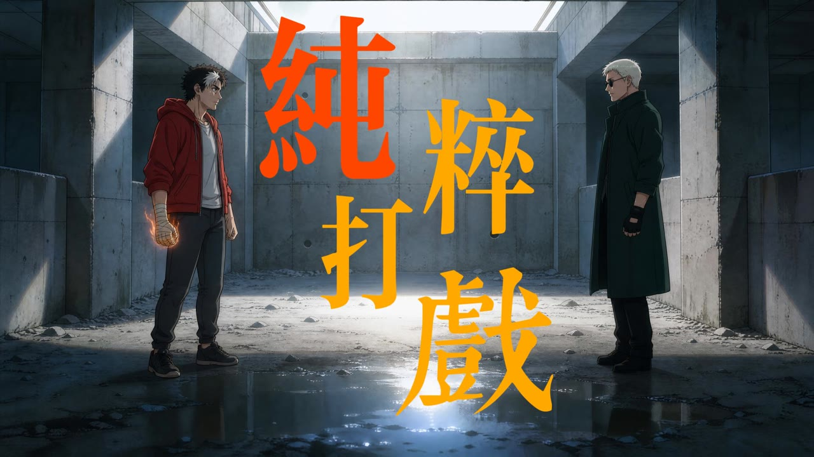

02 / 影像MOTION
02
影 像
M O T I O N
两类影像：一类用 AI 影像工具从零生成，逐镜把控分镜与动作节奏；一类把电影史里的镜头重新剪成一段叙事。前者造画面，后者读画面。
AI 影像 · A I M O T I O N



作 品 说 明 ·《纯粹打戏》
《纯粹打戏》是一段带日语对白的 2D 动画短片：混凝土废墟里的两个人，靠动作节奏、镜头切换与打击特效把 69 秒撑满。全片用 AI 影像工具逐镜生成，我在其中负责剧本、分镜、镜头运动设计与剪辑节奏——把「打起来」这件事，拆成可执行的动作分解和时间节点，也沉淀出一套可复用的打斗提示词 skill。
制 作 流 程
剧本 → 分镜 → 角色参考图 → 逐镜生成 → 剪辑与声音。核心难点是动作的「力」：起势、发力、受力、收招，四段必须逐帧写清，否则画面再快也只是比划。